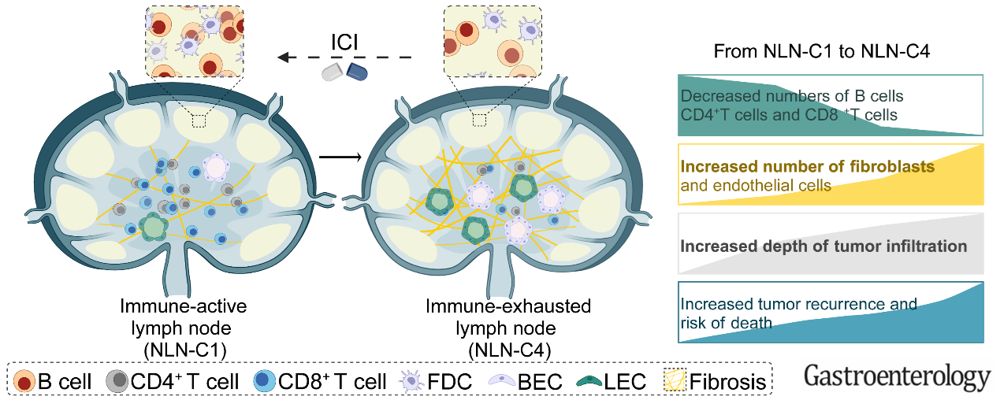
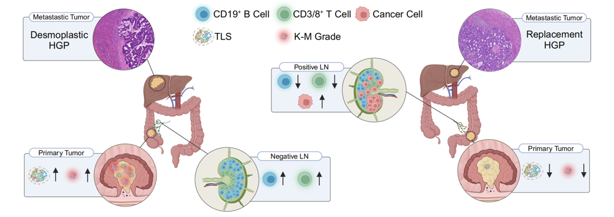
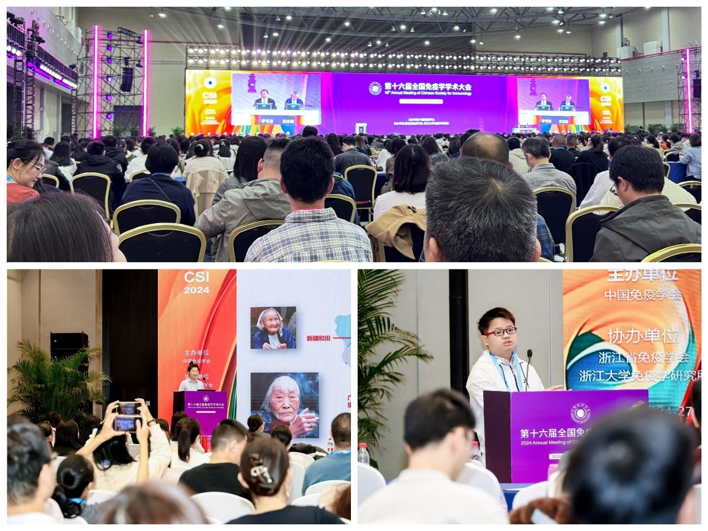
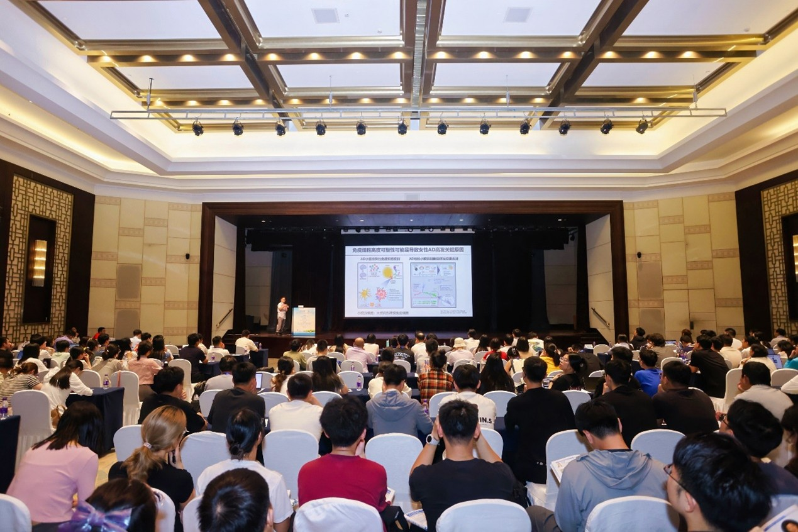

Lab News
[2025-12-27] Our lab distributed New Year gifts and offered a large number of lucky draw spots to all members, bringing a warm and festive atmosphere to the end of the year.

[2025-10-29] Our research, entitled The molecular and immune landscape of the forkhead-box gene family in different subtypes of breast cancer has been published in Genes & Diseases. Congratulations to all co-authors!
[2025-10-07] All members of our lab attended the CCBSB 2025 conference, and Jiale's poster was successfully accepted for presentation.

[2025-09-03] Jiale's paper Integrative Transcriptomic Analysis Decodes the Interplay Between Aging, Senescence, and Cancer has been published in Cancer Science. Congratulations to Jiale and all co-authors!

[2025-08-27] A big welcome to our new graduate students: Riyang Xing, Kexin Yang, Liqi Chen, and Qiwen Wu! We're excited to have you on the team and look forward to achieving great things together.
[2025-08-22] Our collaborative study with Drs. Xishan Wang, Xu Guan and other authors entitled Lymph nodes molecular subtypes unravel lymph nodes heterogeneity and clinical implications in colorectal cancer has been published in Nature Communications. Congratulations to all co-authors!

[2025-02-17] Our collaborative study with Drs. Xishan Wang, Xu Guan and other authors entitled Impact of lymph node metastasis on immune microenvironment and prognosis in colorectal cancer liver metastasis: insights from multiomics profiling has been published in British Journal of Cancer. Congratulations to all co-authors!

[2024-11-27] Drs. Wu and Bi attended the CSI 2024 conference held in Hangzhou, China. They both gave talks on aging and immunology.

[2024-10-09] Our lab attended the CCBSB 2024 conference held in Haikou, China. Dr. Wu was invited to give a talk about "Why women are more prone to dementia in old age: Exploring gender biased features of the brain at the single-cell level".

[2024-10-08] Drs. Deng Wu and Xiaoman Bi founded DBlab at the College of Biomedical Information and Engineering at Hainan Medical University.